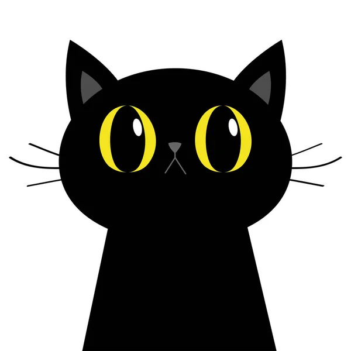

First slide label
Some representative placeholder content for the first slide.
Second slide label
Some representative placeholder content for the second slide.
Third slide label
Some representative placeholder content for the third slide.
Sobre nosotros🐾
PetFamily es una plataforma digital centralizada dedicada a la adopción y apadrinamiento responsable de perros y gatos en Asturias. Nuestro objetivo es conectar a personas comprometidas con el bienestar animal con protectoras y refugios, facilitando procesos seguros, informados y transparentes.
A través de PetFamily podrás descubrir animales que buscan un hogar, realizar tests de compatibilidad y conocimientos sobre el cuidado de estas mascotas, participar en la comunidad y colaborar mediante apadrinamientos y donaciones, tener acceso al mapa para ver puntos importantes como de donaciones, refugios, veterinarias y mucho más.

Adopta, no compres.
Adoptar un animal no es solo una decisión personal, sino también una forma de entender a los animales como seres vivos que sienten y forman parte de una familia, no como productos que se compran.
Cuando una mascota se adquiere por impulso o moda, pueden surgir problemas si no existe un compromiso real a largo plazo, ya que algunas personas no están preparadas para asumir esa responsabilidad.
Además, la compra puede fomentar prácticas de cría centradas en el beneficio económico y no en el bienestar animal, llegando en algunos casos a condiciones inadecuadas o falta de cuidados.
La adopción, en cambio, implica reflexionar, informarse y asumir una responsabilidad duradera, dando una segunda oportunidad a animales que ya necesitan un hogar.
En definitiva, adoptar contribuye a una sociedad más consciente y respetuosa con los animales, una filosofía que PetFamily busca promover: decisiones responsables basadas en el bienestar animal.